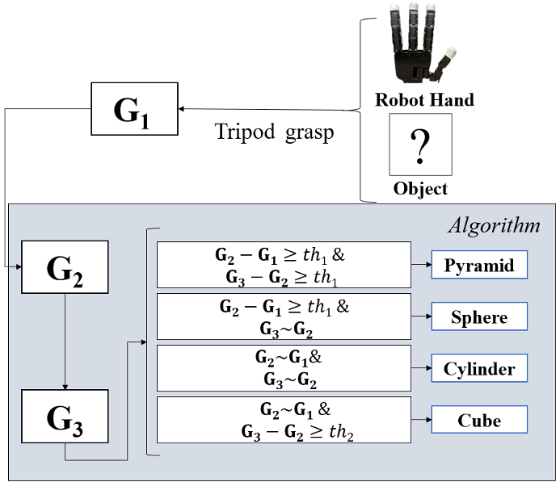
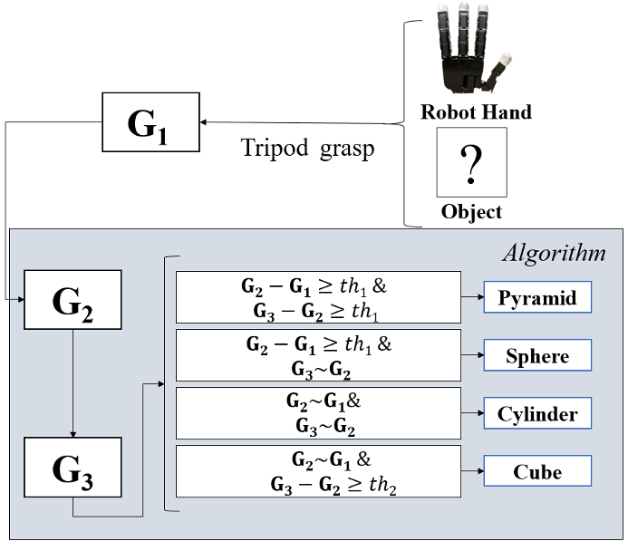

Action Driven Tactile Object Recognition using Silver Nanowire Injected Sensors
Project Date: May 29, 2023
In this project, we explore the use of event-based cameras to improve the performance of high-speed catching tasks with quadrupedal robots. Event-based cameras are specialized sensors that capture changes in the scene asynchronously, enabling faster response times and lower latency compared to traditional frame-based cameras.
The main goal of this project is to design a control system for a quadrupedal robot that can detect and catch high-speed objects traveling at up to 15 m/s. By leveraging the advantages of event-based vision, the robot can process visual data more efficiently, making it better suited for real-time dynamic interactions in complex environments.
The outcomes of this project demonstrate significant improvements in the reaction speed and accuracy of robotic systems in fast-paced scenarios, paving the way for more agile and efficient robotic solutions in industries such as manufacturing, logistics, and search-and-rescue operations.
Technologies Used
- Event-based Vision Sensors
- ROS (Robot Operating System)
- Python and C++ for Algorithm Development
- Real-time Control Systems
- Machine Learning for Object Detection
Project Gallery
 
